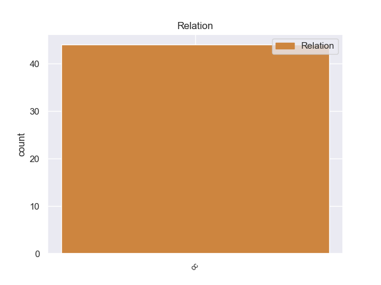
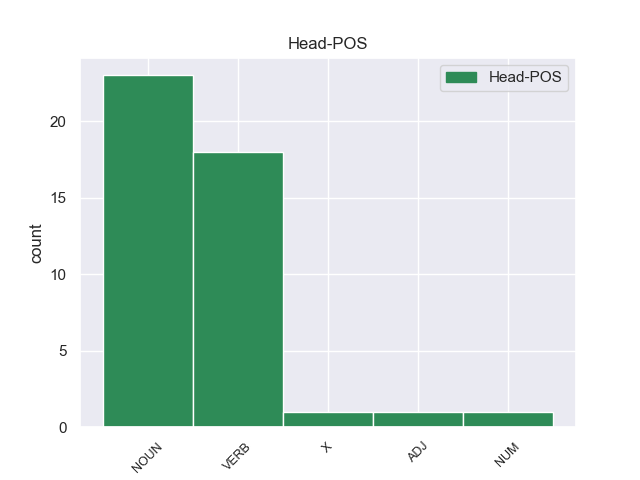

Distribution of features within this leaf



Morphosyntax Rules sorted by frequency.
- When the dependent token is the coordinating conjunction(cc) of the head token, and the head token is NOUN and the dependent token is VERB, the Tense needs to be Pres.
1 La _ _ _ _ 0 _ _ _
2 dirigente _ _ _ _ 0 _ _ _
3 socialdemócrata _ _ _ _ 0 _ _ _
4 dijo _ _ _ _ 0 _ _ _
5 que _ _ _ _ 0 _ _ _
6 su _ _ _ _ 0 _ _ _
7 partido _ _ _ _ 0 _ _ _
8 está _ _ _ _ 0 _ _ _
9 promoviendo _ _ _ _ 0 _ _ _
10 una _ _ _ _ 0 _ _ _
11 Ley _ _ _ _ 0 _ _ _
12 que _ _ _ _ 0 _ _ _
13 obligue _ _ _ _ 0 _ _ _
14 a _ _ _ _ 0 _ _ _
15 todas _ _ _ _ 0 _ _ _
16 las _ _ _ _ 0 _ _ _
17 instituciones _ _ _ _ 0 _ _ _
18 de _ _ _ _ 0 _ _ _
19 el _ _ _ _ 0 _ _ _
20 Estado _ _ _ _ 0 _ _ _
21 a _ _ _ _ 0 _ _ _
22 efectuar _ _ _ _ 0 _ _ _
23 sus _ _ _ _ 0 _ _ _
24 compras _ _ _ _ 0 _ _ _
25 de _ _ _ _ 0 _ _ _
26 manera _ _ _ _ 0 _ _ _
27 pública _ _ _ _ 0 _ _ _
28 por _ _ _ _ 0 _ _ _
29 internet _ _ _ _ 0 _ _ _
30 , _ _ _ _ 0 _ _ _
31 ya _ _ _ _ 0 _ _ _
32 que _ _ _ _ 0 _ _ _
33 en _ _ _ _ 0 _ _ _
34 la _ _ _ _ 0 _ _ _
35 actualidad _ _ _ _ 0 _ _ _
36 ello _ _ _ _ 0 _ _ _
37 es _ _ _ _ 0 _ _ _
38 posible _ _ _ _ 0 _ _ _
39 técnicamente _ _ _ _ 0 _ _ _
40 , _ _ _ _ 0 _ _ _
41 para _ _ _ _ 0 _ _ _
42 que _ _ _ _ 0 _ _ _
43 los _ _ _ _ 0 _ _ _
44 procesos _ _ _ _ 0 _ _ _
45 de _ _ _ _ 0 _ _ _
46 adquisición _ _ _ _ 0 _ _ _
47 se _ _ _ _ 0 _ _ _
48 realicen _ _ _ _ 0 _ _ _
49 a _ _ _ _ 0 _ _ _
50 la _ _ _ _ 0 _ _ _
51 vista _ _ _ _ 0 _ _ _
52 de _ _ _ _ 0 _ _ _
53 el _ _ _ _ 0 _ _ _
54 ciudadano _ _ _ _ 0 _ _ _
55 , _ _ _ _ 0 _ _ _
56 garantizando _ _ _ _ 0 _ _ _
57 así _ _ _ _ 0 _ _ _
58 su _ _ _ _ 0 _ _ _
59 transparencia _ _ _ _ 0 _ _ _
60 , _ _ _ _ 0 _ _ _
61 lo _ _ _ _ 0 _ _ _
62 que _ _ _ _ 0 _ _ _
63 permitirá _ _ _ _ 0 _ _ _
64 una _ _ _ _ 0 _ _ _
65 efectiva _ _ _ _ 0 _ _ _
66 contraloría _ _ _ _ 0 _ _ _
67 social _ _ _ _ 0 _ _ _
68 que _ _ _ _ 0 _ _ _
69 avale _ _ _ _ 0 _ _ _
70 la _ _ _ _ 0 _ _ _
71 honestidad _ _ _ _ 0 _ _ _
72 de _ _ _ _ 0 _ _ _
73 los _ _ _ _ 0 _ _ _
74 procesos _ _ _ _ 0 _ _ _
75 de _ _ _ _ 0 _ _ _
76 compras _ _ _ _ 0 _ _ _
77 a _ _ _ _ 0 _ _ _
78 el _ _ _ _ 0 _ _ _
79 evitar _ _ _ _ 0 _ _ _
80 la _ _ _ _ 0 _ _ _
81 intermediación _ _ _ _ 0 _ _ _
82 , _ _ _ _ 0 _ _ _
83 es ser VERB _ Mood=Ind|Number=Sing|Person=3|Tense=Pres|VerbForm=Fin 87 cc _ _
84 decir _ _ _ _ 0 _ _ _
85 , _ _ _ _ 0 _ _ _
86 el _ _ _ _ 0 _ _ _
87 encuentro encuentro NOUN _ Gender=Masc|Number=Sing 0 _ _ _
88 cara _ _ _ _ 0 _ _ _
89 a _ _ _ _ 0 _ _ _
90 cara _ _ _ _ 0 _ _ _
91 entre _ _ _ _ 0 _ _ _
92 el _ _ _ _ 0 _ _ _
93 vendedor _ _ _ _ 0 _ _ _
94 y _ _ _ _ 0 _ _ _
95 el _ _ _ _ 0 _ _ _
96 comprador _ _ _ _ 0 _ _ _
97 , _ _ _ _ 0 _ _ _
98 que _ _ _ _ 0 _ _ _
99 es _ _ _ _ 0 _ _ _
100 un _ _ _ _ 0 _ _ _
101 mecanismo _ _ _ _ 0 _ _ _
102 que _ _ _ _ 0 _ _ _
103 facilita _ _ _ _ 0 _ _ _
104 la _ _ _ _ 0 _ _ _
105 corrupción _ _ _ _ 0 _ _ _
106 a _ _ _ _ 0 _ _ _
107 el _ _ _ _ 0 _ _ _
108 poner _ _ _ _ 0 _ _ _
109 en _ _ _ _ 0 _ _ _
110 manos _ _ _ _ 0 _ _ _
111 de _ _ _ _ 0 _ _ _
112 algunos _ _ _ _ 0 _ _ _
113 funcionarios _ _ _ _ 0 _ _ _
114 inescrupulosos _ _ _ _ 0 _ _ _
115 el _ _ _ _ 0 _ _ _
116 poder _ _ _ _ 0 _ _ _
117 discrecional _ _ _ _ 0 _ _ _
118 de _ _ _ _ 0 _ _ _
119 adquirir _ _ _ _ 0 _ _ _
120 lo _ _ _ _ 0 _ _ _
121 bienes _ _ _ _ 0 _ _ _
122 y _ _ _ _ 0 _ _ _
123 servicios _ _ _ _ 0 _ _ _
124 que _ _ _ _ 0 _ _ _
125 los _ _ _ _ 0 _ _ _
126 organismos _ _ _ _ 0 _ _ _
127 públicos _ _ _ _ 0 _ _ _
128 requieren _ _ _ _ 0 _ _ _
129 . _ _ _ _ 0 _ _ _
1 El _ _ _ _ 0 _ _ _
2 entrenador _ _ _ _ 0 _ _ _
3 serbio _ _ _ _ 0 _ _ _
4 confía _ _ _ _ 0 _ _ _
5 en _ _ _ _ 0 _ _ _
6 el _ _ _ _ 0 _ _ _
7 jerezano _ _ _ _ 0 _ _ _
8 , _ _ _ _ 0 _ _ _
9 que _ _ _ _ 0 _ _ _
10 se _ _ _ _ 0 _ _ _
11 convierte _ _ _ _ 0 _ _ _
12 en _ _ _ _ 0 _ _ _
13 parte _ _ _ _ 0 _ _ _
14 fundamental _ _ _ _ 0 _ _ _
15 de _ _ _ _ 0 _ _ _
16 el _ _ _ _ 0 _ _ _
17 equipo _ _ _ _ 0 _ _ _
18 que _ _ _ _ 0 _ _ _
19 consigue _ _ _ _ 0 _ _ _
20 " _ _ _ _ 0 _ _ _
21 El _ _ _ _ 0 _ _ _
22 Doblete _ _ _ _ 0 _ _ _
23 " _ _ _ _ 0 _ _ _
24 , _ _ _ _ 0 _ _ _
25 es ser VERB _ Mood=Ind|Number=Sing|Person=3|Tense=Pres|VerbForm=Fin 29 cc _ _
26 decir _ _ _ _ 0 _ _ _
27 , _ _ _ _ 0 _ _ _
28 que _ _ _ _ 0 _ _ _
29 gana ganar VERB _ Mood=Ind|Number=Sing|Person=3|Tense=Pres|VerbForm=Fin 0 _ _ _
30 la _ _ _ _ 0 _ _ _
31 Liga _ _ _ _ 0 _ _ _
32 y _ _ _ _ 0 _ _ _
33 la _ _ _ _ 0 _ _ _
34 Copa _ _ _ _ 0 _ _ _
35 de _ _ _ _ 0 _ _ _
36 el _ _ _ _ 0 _ _ _
37 Rey _ _ _ _ 0 _ _ _
38 de _ _ _ _ 0 _ _ _
39 Fútbol _ _ _ _ 0 _ _ _
40 en _ _ _ _ 0 _ _ _
41 esa _ _ _ _ 0 _ _ _
42 misma _ _ _ _ 0 _ _ _
43 campaña _ _ _ _ 0 _ _ _
44 . _ _ _ _ 0 _ _ _
1 A _ _ _ _ 0 _ _ _
2 su _ _ _ _ 0 _ _ _
3 juicio _ _ _ _ 0 _ _ _
4 , _ _ _ _ 0 _ _ _
5 es _ _ _ _ 0 _ _ _
6 el _ _ _ _ 0 _ _ _
7 ayuntamiento _ _ _ _ 0 _ _ _
8 el _ _ _ _ 0 _ _ _
9 que _ _ _ _ 0 _ _ _
10 decide _ _ _ _ 0 _ _ _
11 sobre _ _ _ _ 0 _ _ _
12 " _ _ _ _ 0 _ _ _
13 la _ _ _ _ 0 _ _ _
14 colocación _ _ _ _ 0 _ _ _
15 de _ _ _ _ 0 _ _ _
16 quioscos _ _ _ _ 0 _ _ _
17 , _ _ _ _ 0 _ _ _
18 puestos _ _ _ _ 0 _ _ _
19 de _ _ _ _ 0 _ _ _
20 castañas _ _ _ _ 0 _ _ _
21 , _ _ _ _ 0 _ _ _
22 flores _ _ _ _ 0 _ _ _
23 , _ _ _ _ 0 _ _ _
24 maceteros _ _ _ _ 0 _ _ _
25 , _ _ _ _ 0 _ _ _
26 bolardos _ _ _ _ 0 _ _ _
27 ... _ _ _ _ 0 _ _ _
28 en _ _ _ _ 0 _ _ _
29 cualquier _ _ _ _ 0 _ _ _
30 lugar _ _ _ _ 0 _ _ _
31 , _ _ _ _ 0 _ _ _
32 sea ser VERB _ Mood=Sub|Number=Sing|Person=3|Tense=Pres|VerbForm=Fin 33 cc _ _
33 BIC bic X _ _ 0 _ _ _
34 ( _ _ _ _ 0 _ _ _
35 Bien _ _ _ _ 0 _ _ _
36 de _ _ _ _ 0 _ _ _
37 Interés _ _ _ _ 0 _ _ _
38 Cultural _ _ _ _ 0 _ _ _
39 ) _ _ _ _ 0 _ _ _
40 , _ _ _ _ 0 _ _ _
41 sea _ _ _ _ 0 _ _ _
42 centro _ _ _ _ 0 _ _ _
43 histórico _ _ _ _ 0 _ _ _
44 " _ _ _ _ 0 _ _ _
45 , _ _ _ _ 0 _ _ _
46 y _ _ _ _ 0 _ _ _
47 " _ _ _ _ 0 _ _ _
48 si _ _ _ _ 0 _ _ _
49 otras _ _ _ _ 0 _ _ _
50 personas _ _ _ _ 0 _ _ _
51 mantienen _ _ _ _ 0 _ _ _
52 otra _ _ _ _ 0 _ _ _
53 postura _ _ _ _ 0 _ _ _
54 alguien _ _ _ _ 0 _ _ _
55 nos _ _ _ _ 0 _ _ _
56 tendrá _ _ _ _ 0 _ _ _
57 que _ _ _ _ 0 _ _ _
58 decir _ _ _ _ 0 _ _ _
59 quién _ _ _ _ 0 _ _ _
60 tiene _ _ _ _ 0 _ _ _
61 razón _ _ _ _ 0 _ _ _
62 " _ _ _ _ 0 _ _ _
63 . _ _ _ _ 0 _ _ _
1 La _ _ _ _ 0 _ _ _
2 anfitriona _ _ _ _ 0 _ _ _
3 , _ _ _ _ 0 _ _ _
4 Claudia _ _ _ _ 0 _ _ _
5 , _ _ _ _ 0 _ _ _
6 muy _ _ _ _ 0 _ _ _
7 amable _ _ _ _ 0 _ _ _
8 y _ _ _ _ 0 _ _ _
9 disponible _ _ _ _ 0 _ _ _
10 a _ _ _ _ 0 _ _ _
11 todo _ _ _ _ 0 _ _ _
12 tipo _ _ _ _ 0 _ _ _
13 de _ _ _ _ 0 _ _ _
14 información _ _ _ _ 0 _ _ _
15 y _ _ _ _ 0 _ _ _
16 consejo _ _ _ _ 0 _ _ _
17 sea ser VERB _ Mood=Sub|Number=Sing|Person=3|Tense=Pres|VerbForm=Fin 18 cc _ _
18 práctico práctico ADJ _ Gender=Masc|Number=Sing 0 _ _ _
19 que _ _ _ _ 0 _ _ _
20 turístico _ _ _ _ 0 _ _ _
21 o _ _ _ _ 0 _ _ _
22 gastronómico _ _ _ _ 0 _ _ _
23 . _ _ _ _ 0 _ _ _
1 Esta _ _ _ _ 0 _ _ _
2 cinta _ _ _ _ 0 _ _ _
3 fue _ _ _ _ 0 _ _ _
4 filmada _ _ _ _ 0 _ _ _
5 en _ _ _ _ 0 _ _ _
6 1964 _ _ _ _ 0 _ _ _
7 pero _ _ _ _ 0 _ _ _
8 su _ _ _ _ 0 _ _ _
9 estreno _ _ _ _ 0 _ _ _
10 no _ _ _ _ 0 _ _ _
11 se _ _ _ _ 0 _ _ _
12 realizaría _ _ _ _ 0 _ _ _
13 sino _ _ _ _ 0 _ _ _
14 3 _ _ _ _ 0 _ _ _
15 años _ _ _ _ 0 _ _ _
16 después _ _ _ _ 0 _ _ _
17 , _ _ _ _ 0 _ _ _
18 es ser VERB _ Mood=Ind|Number=Sing|Person=3|Tense=Pres|VerbForm=Fin 22 cc _ _
19 decir _ _ _ _ 0 _ _ _
20 , _ _ _ _ 0 _ _ _
21 en _ _ _ _ 0 _ _ _
22 1967 1967 NUM _ NumType=Card 0 _ _ _
23 . _ _ _ _ 0 _ _ _
No non-conforming examples found.